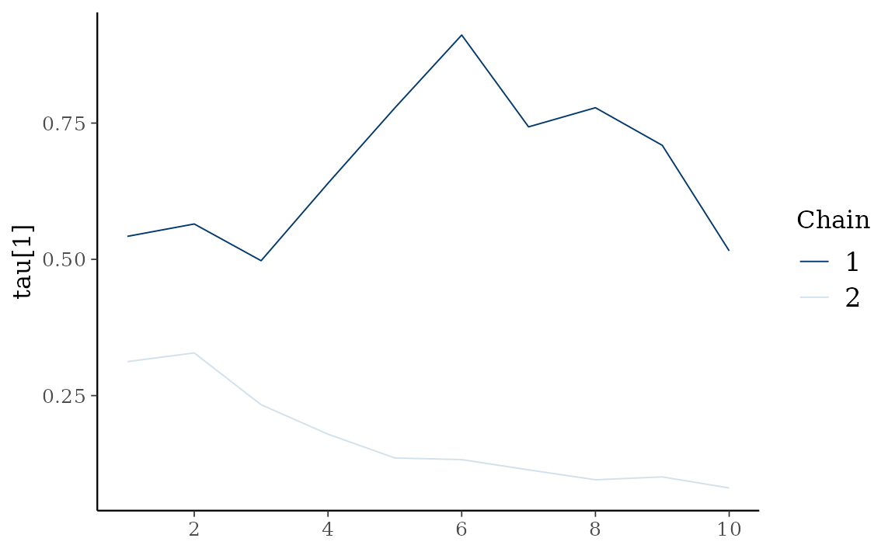
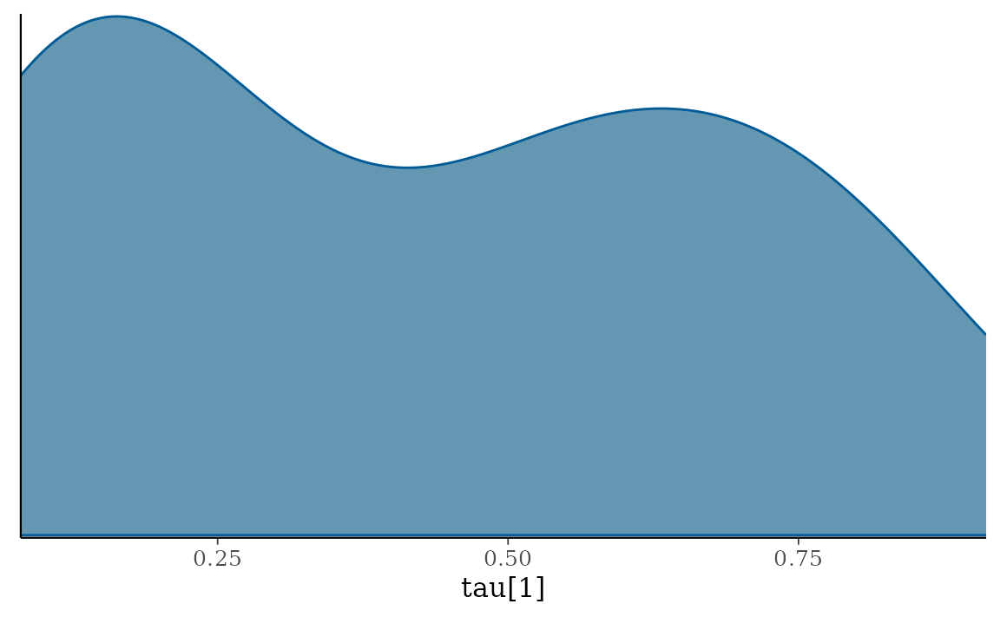

etf <- etf_vix[1:55, 1:3]
# Split-------------------------------
h <- 5
etf_eval <- divide_ts(etf, h)
etf_train <- etf_eval$train
etf_test <- etf_eval$testModels with Stochastic Volatilities
By specifying cov_spec = set_sv(),
var_bayes() and vhar_bayes() fits VAR-SV and
VHAR-SV with shrinkage priors, respectively.
- Three different prior for innovation covariance, and specify through
bayes_spec- Minneosta prior
- BVAR:
set_bvar() - BVHAR:
set_bvhar()andset_weight_bvhar()
- BVAR:
- SSVS prior:
set_ssvs() - Horseshoe prior:
set_horseshoe() - NG prior:
set_ng() - DL prior:
set_dl()
- Minneosta prior
-
sv_spec: prior settings for SV,set_sv() -
intercept: prior for constant term,set_intercept()
set_sv()
#> Model Specification for SV with Cholesky Prior
#>
#> Parameters: Contemporaneous coefficients, State variance, Initial state
#> Prior: Cholesky
#> ========================================================
#> Setting for 'shape':
#> [1] rep(3, dim)
#>
#> Setting for 'scale':
#> [1] rep(0.01, dim)
#>
#> Setting for 'initial_mean':
#> [1] rep(1, dim)
#>
#> Setting for 'initial_prec':
#> [1] 0.1 * diag(dim)SSVS
(fit_ssvs <- vhar_bayes(etf_train, num_chains = 2, num_iter = 20, bayes_spec = set_ssvs(), cov_spec = set_sv(), include_mean = FALSE, minnesota = "longrun"))
#> Call:
#> vhar_bayes(y = etf_train, num_chains = 2, num_iter = 20, bayes_spec = set_ssvs(),
#> cov_spec = set_sv(), include_mean = FALSE, minnesota = "longrun")
#>
#> BVHAR with Stochastic Volatility
#> Fitted by Gibbs sampling
#> Number of chains: 2
#> Total number of iteration: 20
#> Number of burn-in: 10
#> ====================================================
#>
#> Parameter Record:
#> # A draws_df: 10 iterations, 2 chains, and 177 variables
#> phi[1] phi[2] phi[3] phi[4] phi[5] phi[6] phi[7] phi[8]
#> 1 -0.2154 -0.918 -0.7346 2.1794 1.7256 0.2252 -1.092 0.5860
#> 2 -0.2785 0.361 -0.1798 -0.0515 0.2544 -0.1548 -0.450 -0.3199
#> 3 0.0353 0.931 0.2222 0.0171 -0.2469 -0.0554 0.117 1.4097
#> 4 0.5949 0.525 0.1028 0.0410 0.0271 -0.0455 -0.951 0.7377
#> 5 0.3498 0.290 0.0491 0.2809 -0.0988 -0.1612 -2.714 0.2611
#> 6 0.2042 -0.608 -0.7952 1.0893 -0.2569 0.1259 -0.668 0.0569
#> 7 2.8408 0.429 0.8159 -0.1145 -0.4483 -0.0771 -1.257 0.3496
#> 8 1.2273 0.108 -0.2173 0.6008 0.2836 -0.5716 0.109 0.5889
#> 9 0.8396 -0.286 0.4581 1.8056 -1.0432 0.7261 0.666 0.0355
#> 10 -1.5707 -2.630 2.8384 2.5789 -0.1900 -0.6488 0.906 -0.0653
#> # ... with 10 more draws, and 169 more variables
#> # ... hidden reserved variables {'.chain', '.iteration', '.draw'}Horseshoe
(fit_hs <- vhar_bayes(etf_train, num_chains = 2, num_iter = 20, bayes_spec = set_horseshoe(), cov_spec = set_sv(), include_mean = FALSE, minnesota = "longrun"))
#> Call:
#> vhar_bayes(y = etf_train, num_chains = 2, num_iter = 20, bayes_spec = set_horseshoe(),
#> cov_spec = set_sv(), include_mean = FALSE, minnesota = "longrun")
#>
#> BVHAR with Stochastic Volatility
#> Fitted by Gibbs sampling
#> Number of chains: 2
#> Total number of iteration: 20
#> Number of burn-in: 10
#> ====================================================
#>
#> Parameter Record:
#> # A draws_df: 10 iterations, 2 chains, and 211 variables
#> phi[1] phi[2] phi[3] phi[4] phi[5] phi[6] phi[7] phi[8]
#> 1 0.09387 -0.2328 0.4597 -0.18840 0.8345 0.01655 -0.9590 0.038319
#> 2 -0.09961 -0.6774 0.2270 0.16758 0.5573 0.00551 0.2524 0.064362
#> 3 -0.19695 -0.7337 0.0183 0.40152 -0.2635 -0.00795 0.0042 0.057482
#> 4 -0.09827 -0.1309 -0.1432 -0.00451 0.1331 0.00148 0.0495 0.020706
#> 5 0.11908 0.0935 -0.2156 0.22296 -0.1274 -0.00820 -0.0373 -0.005457
#> 6 -0.02723 0.0708 0.4767 -0.20709 0.1779 -0.00173 0.0112 -0.044321
#> 7 0.03845 -0.0797 0.4980 -0.24877 0.1477 0.02493 0.6637 -0.011320
#> 8 -0.00283 0.1016 0.4239 0.12432 0.0137 -0.01699 0.6483 -0.000937
#> 9 -0.06435 0.1563 0.4189 0.61074 0.1722 -0.01553 0.2496 -0.000081
#> 10 0.07823 0.1444 0.1609 0.70138 0.0250 -0.01597 0.1058 -0.001969
#> # ... with 10 more draws, and 203 more variables
#> # ... hidden reserved variables {'.chain', '.iteration', '.draw'}Normal-Gamma prior
(fit_ng <- vhar_bayes(etf_train, num_chains = 2, num_iter = 20, bayes_spec = set_ng(), cov_spec = set_sv(), include_mean = FALSE, minnesota = "longrun"))
#> Call:
#> vhar_bayes(y = etf_train, num_chains = 2, num_iter = 20, bayes_spec = set_ng(),
#> cov_spec = set_sv(), include_mean = FALSE, minnesota = "longrun")
#>
#> BVHAR with Stochastic Volatility
#> Fitted by Metropolis-within-Gibbs
#> Number of chains: 2
#> Total number of iteration: 20
#> Number of burn-in: 10
#> ====================================================
#>
#> Parameter Record:
#> # A draws_df: 10 iterations, 2 chains, and 184 variables
#> phi[1] phi[2] phi[3] phi[4] phi[5] phi[6] phi[7] phi[8]
#> 1 -0.03503 0.4053 0.80020 2.371 -0.00209 -0.005311 0.3870 -0.1045
#> 2 0.39979 0.2931 0.91785 1.872 0.00119 0.027651 3.3153 -0.1662
#> 3 -0.35569 -0.0641 0.66248 0.597 0.00706 0.002321 1.6667 -0.3047
#> 4 0.06540 -0.0491 0.85497 0.114 0.04083 -0.000544 2.7827 -0.3749
#> 5 -0.02658 0.0935 0.23674 1.310 -0.00705 -0.319279 1.6540 -0.8789
#> 6 0.10168 -0.0181 0.16811 1.184 0.01823 -0.329084 0.7259 0.2146
#> 7 0.10309 0.0822 -0.01365 0.860 -0.01033 0.122883 -0.2532 0.3278
#> 8 -0.00633 0.3103 -0.03168 -0.237 0.04021 0.247472 -0.6210 -0.0877
#> 9 0.01719 0.1843 -0.00242 0.297 0.13990 0.005749 0.8780 0.0404
#> 10 0.00985 -0.0215 -0.09928 0.311 -0.13098 -0.117641 0.0465 -0.0343
#> # ... with 10 more draws, and 176 more variables
#> # ... hidden reserved variables {'.chain', '.iteration', '.draw'}Dirichlet-Laplace prior
(fit_dl <- vhar_bayes(etf_train, num_chains = 2, num_iter = 20, bayes_spec = set_dl(), cov_spec = set_sv(), include_mean = FALSE, minnesota = "longrun"))
#> Call:
#> vhar_bayes(y = etf_train, num_chains = 2, num_iter = 20, bayes_spec = set_dl(),
#> cov_spec = set_sv(), include_mean = FALSE, minnesota = "longrun")
#>
#> BVHAR with Stochastic Volatility
#> Fitted by Gibbs sampling
#> Number of chains: 2
#> Total number of iteration: 20
#> Number of burn-in: 10
#> ====================================================
#>
#> Parameter Record:
#> # A draws_df: 10 iterations, 2 chains, and 178 variables
#> phi[1] phi[2] phi[3] phi[4] phi[5] phi[6] phi[7] phi[8]
#> 1 -0.00311 0.37352 -0.082172 -0.807 1.1321 0.08043 0.12454 0.91372
#> 2 -0.01038 -0.23417 -0.007496 2.195 0.1480 -0.01890 -0.00529 0.27286
#> 3 0.00177 0.03663 0.001182 1.423 0.0979 0.00538 0.08415 0.41596
#> 4 0.01179 0.00553 0.000538 0.280 0.6115 0.02157 0.04629 0.01366
#> 5 -0.02635 -0.28482 0.080125 0.844 0.3990 0.10108 -0.03438 -0.00469
#> 6 0.03827 -0.25505 0.043283 1.368 1.6705 -0.00775 0.05829 -0.07362
#> 7 -0.02251 -0.23306 -0.001043 1.185 1.1578 0.03061 0.02282 0.10891
#> 8 -0.06679 -0.38600 -0.027257 0.849 1.7294 -0.01657 0.02059 -0.14193
#> 9 0.22481 -0.16968 -0.007867 0.945 0.1527 0.13183 0.02438 0.09854
#> 10 0.04347 0.18982 -0.044606 0.471 0.2496 0.06070 -0.02120 -0.14466
#> # ... with 10 more draws, and 170 more variables
#> # ... hidden reserved variables {'.chain', '.iteration', '.draw'}Bayesian visualization
autoplot() also provides Bayesian visualization.
type = "trace" gives MCMC trace plot.
autoplot(fit_hs, type = "trace", regex_pars = "tau")
type = "dens" draws MCMC density plot.
autoplot(fit_hs, type = "dens", regex_pars = "tau")